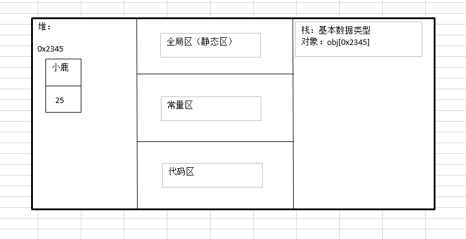

JavaScript中变量、作用域和内存问题
一、变量
（1）ECMAScript变量肯能包含两种不同的数据类型的值：基本类型值和引用类型值。基本类型值指的是简单的数据段，引用类型值指那些可能由多个值构成的对象。
（2）基本数据类型是按值访问，可以操作保存在变量中的实际的值；引用类型的值是保存在内存中对象，操作对象时，实际上是在操作对象的引用而不是实际的对象，引用类型的值是按引用访问的。

（3）传递参数。ECMScript中所有的函数的参数都是按值传递的。
function setName(obj){
obj.name = "Nicholas";
obj = new Object(); //理解为新建一个对象，这个对象和参数obj的值不同，即在堆中地址不同，堆中值也不同，不是同一个对象
obj.name = "Greg"; //函数执行完后，新建的obj被销毁。
}
var person = new Object();
setName(person);
alert(person.name); //"Nicholas"
当在函数内部重写obj时，这个变量引用的就是一个局部对象了。而这个局部对象会在函数执行完毕后立即被销毁。
（4）instanceof操作符 如果变量时给定引用类型的实例，那么instanceof操作符始终会返回true；如果使用instanceof操作符检测基本类型的值，则操作符始终返回false；因为基本类型不是对象。
二、执行环境及作用域
（1）执行环境是JavaScript中最为重要的一个概念。执行环境定义了变量或函数有权访问的其他数据，决定了它们各自的行为。每个执行环境都有一个与之关联的变量对象，环境中定义的所有变量和函数都保存在这个对象中。
全局执行环境是最外围的一个执行环境。在web浏览器中，全局执行环境被认为是window对象。
当代码在一个环境中执行时，会创建变量对象的一个作用域链。作用域链的作用是保证对执行环境有权访问的所有变量和函数的有序访问。作用域链的前端，始终都是当前执行的代码所在环境的变量对象。如果这个环境是函数，则将其活动对象作为变量对象。活动对象在最开始时只包含一个变量，即arguments对象（这个对象在全局环境中是不存在的）。全局执行环境的变量对象始终都是作用域链中的最后一个对象。
（2）没有块级作用域
if(true){
var color = "blue";
}
alert(color); //blue;
for(vari = 0; i < 10;i++){
doSomething(i);
}
alert(i); //10;
对于JavaScript来说，由for语句创建的变量 i 即使在for循环执行结束后，也依旧会存在于循环外部的执行环境中。
三、垃圾收集
（1）JavaScript具有自动垃圾收集机制。这种垃圾收集机制的原理其实很简单：找出那些不再继续使用的变量，然后释放其占用的内存。
JavaScript中最常用的垃圾收集方式是标记清除。垃圾收集器在运行的时候会给存储在内存中的所有变量都加上标记。然后，它会去掉环境中的变量以及被环境中的变量引用的变量的标记。而在此之后再被加上标记的变量将被视为准备删除的变量。
另一种不太常见的垃圾收集策略叫做引用计数。
（2）管理内存
JavaScript在进行内存管理及垃圾收集时面临的问题还是有点与众不同。其中最主要的一个问题，就是分配给web浏览器的可用内存数量通常要比分配给桌面应用程序的少。这样做的目的主要是出于安全方面考虑，目的是防止运行JavaScript的网页耗尽全部系统内存而导致系统崩溃。内存限制问题不仅会影响给变量分配内存，同时还会影响调用栈以及在一个线程中能够同时执行的语句数量。
优化内存占用的最佳方式，就是为执行中的代码值保存必要的数据。一旦数据不再有用，最好通过将其值设置为null来释放其引用——这个做法叫做解除引用
。这一做法使用于大多数全局变量和全局对象的属性。
function createPerson(name){
var localPerson = new Object();
localPerdon.name = name;
return localPerson;
}
var globalPerson = createPerson("Nicholas");
//手工解除globalPerson的引用
globalPerson = null;
解除一个值的引用并不意味着自动挥手该值所占用的内存。解除引用的真正作用是让值脱离执行环境，以便垃圾收集器下次运行时将其回收。
<<< JavaScript高级程序设计中第2、3章中细节知识点
JavaScript中离线应用和客户端存储 >>>